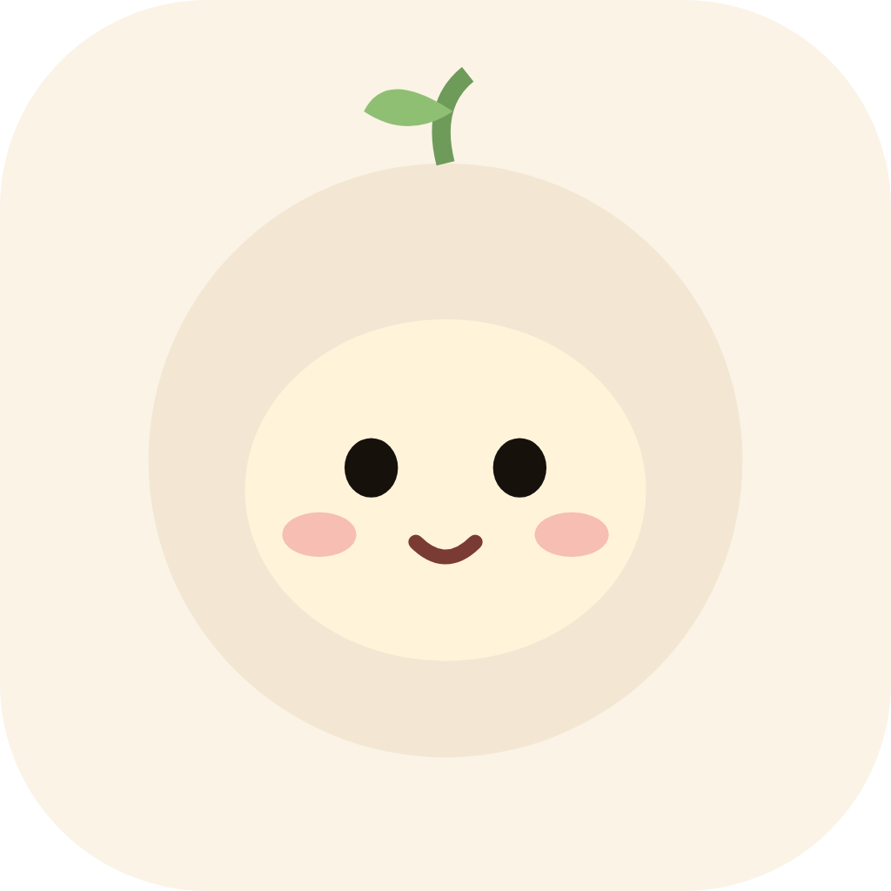

Connect to your Free Muse
Free Muse runs on your own computer or server. Enter the address of its web app.
Not running yet? On the server: cp .env.example .env, add your MODEL_API_KEY, then docker compose up. The web app is on port 3000. Change the server any time with Ctrl/⌘ + ,